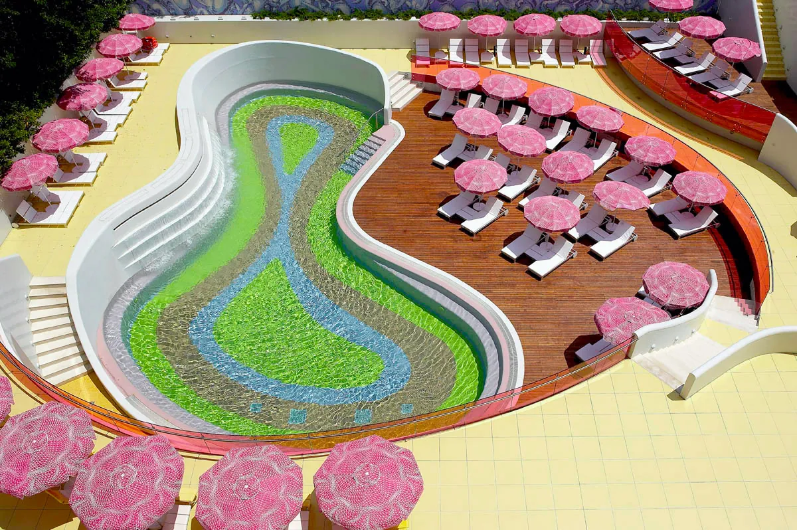

Lori Coleman-Brown
Atlas Pilates, United StatesOver 30 years as a Classical Pilates Instructor, and Director of Education, Teacher Training and Graduate Teaching Programs at Atlas Pilates in Seattle, WA.
The biggest 3-day Classical Pilates Conference in 2024, with world renowned speakers, in the historic city of Athens.
We’re thrilled to announce that the ‘Athens Classical Pilates Conference 2024’ is now at full capacity. However, if you were unable to secure a spot, please provide your information for our waitlist. We’ll be sure to contact you if any openings become available due to cancellations.
Add to waiting listOver 30 years as a Classical Pilates Instructor, and Director of Education, Teacher Training and Graduate Teaching Programs at Atlas Pilates in Seattle, WA.

Founder of the Pilates E-Motion educational school, trained at Vintage Pilates in Los Angeles and selected by Jay Grimes for “Teaching the Work”.

Former principal dancer of the State Opera and Ballet, and founder of Legacy Pilates Apparatus, maker of hand-built classical apparatus.

Teacher trainer for Gloria Gasperi’s school at her studio, Palermo Pilates, and organiser of the Palermo Pilates Symposium.
The conference takes place in the historic city of Athens, Greece in an area called Kifisia, located in the Northern part of Athens just 20 mins away from the city’s historic centre and 30 mins from the Airport.
Don’t miss the opportunity to rejuvenate in Kifisia, walk in the historic alleys around the Acropolis or explore Athens by night.

W: semiramisathens.gr
P: +30 210 6284400
E: info@semiramisathens.gr
For those participating in the Conference we have secured a 15% discount in the hotel during the days of the conference. Simply use the code ‘ACPC’ while booking online and the discount will be automatically implemented.